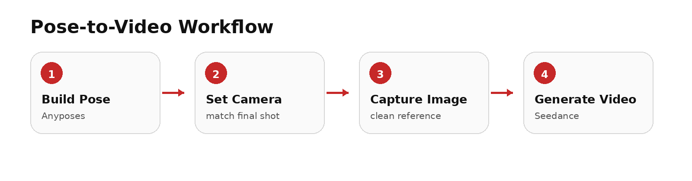
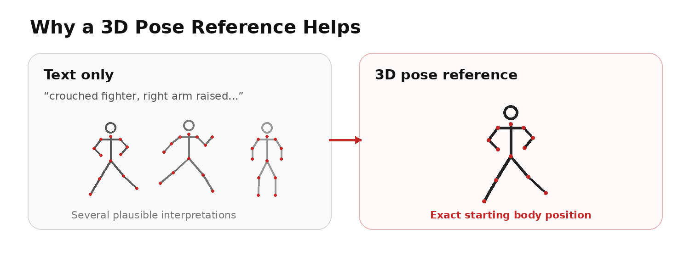
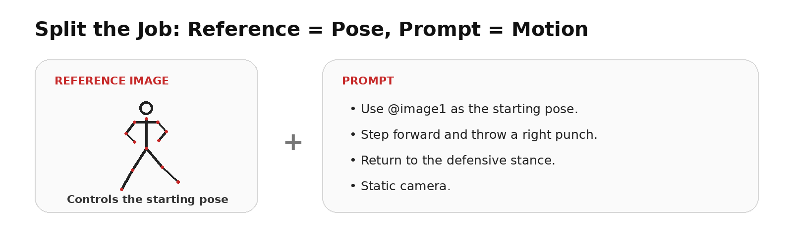

A practical workflow using Anyposes + Seedance
The problem: text prompts are good at describing actions, but weak at precise body positions. If the exact pose matters, build it visually first and use it as Seedance’s starting reference.

1. When to Use a 3D Pose Reference
Use it when the starting body position is important: fight scenes, sports, dance, kneeling, sitting/standing, running starts, falls, or shots with unusual camera angles.
Skip it for simple actions such as “a man walks down the street.”

2. Build the Pose in Anyposes
Open Anyposes and create only the pose that matters to the shot. Focus on head direction, torso rotation, arms, legs, and weight distribution.
- Match the body pose to the first frame you want.
- Set the camera angle in Anyposes too; front, side, low-angle and three-quarter views produce different results.
- Capture a clean image with the character clearly visible.
3. Let the Reference Control the Pose — Let the Prompt Control the Motion
Do not waste prompt space redescribing every arm and leg angle already visible in the reference image. Tell Seedance what happens next.

Prompt Template
Use @image1 as the starting pose. The character [ACTION]. End with [FINAL POSITION]. The camera [CAMERA MOVEMENT]. Keep the motion natural and preserve body proportions. |
4. Three Useful Examples
Fight scene
Reference: defensive fighting stance.
Prompt: Use @image1 as the starting pose. Step forward, throw a right punch, then return to the defensive stance. Static camera.
Running start
Reference: torso leaning forward, one leg behind, opposite arm forward.
Prompt: Use @image1 as the starting pose. Push off the ground and accelerate into a sprint. The camera tracks alongside the runner.
Stand up from a chair
Reference: exact seated pose and foot placement.
Prompt: Use @image1 as the starting pose. Lean forward, stand up naturally, turn toward the window, and stop. Eye-level camera.
5. What Actually Improves Results
- Use the 3D pose for the starting frame, not the whole animation.
- Separate character motion from camera motion in the prompt.
- If the result is wrong, change one variable at a time: pose, action, camera, or appearance reference.
- If the camera cannot see a body part, do not spend time fine-tuning it.
Bottom Line
Anyposes controls where the character starts. Seedance controls what happens next. This is usually faster and more reliable than trying to describe a complex human pose entirely with text.
SEO
Title: How to Control Character Poses in Seedance with 3D Pose References
Meta description: Learn how to control character poses in Seedance using 3D pose references. Build the pose in Anyposes, set the camera angle, and turn it into AI video.
Slug: /3d-pose-reference-for-ai-video